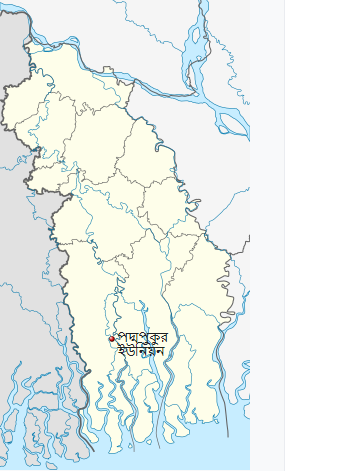

পদ্মপুকুর ইউনিয়ন
এক নজরে পদ্মপুকুর ইউনিয়নের মৌলিক তথ্য

| আয়তন ৩৭ বর্গ কি.মি | মৌজা ৪টি |
| গ্রাম ১৫টি | জনসংখ্যা ২৮,৬৫১ জন |
| মুসলমান ৭২% | হিন্দু ২০% |
| অন্যান্য ৩% | শিক্ষার হার ৩৭% |
| সরকারী প্রাথমিক বিদ্যালয় ৮টি | বেসরকারী প্রাথমিক বিদ্যালয় ১০টি |
| মাধ্যমিক বিদ্যালয় ২টি | মাদ্রাসার সংখ্যা ৩টি |
| মসজিদের সংখ্যা ২৯টি | ঈদগাহ ১৫টি |
| মন্দিরের সংখ্যা ১৭টি | শ্মশান ১টি |
| পাকা রাস্তা ২০ কি.মি. | সাইক্লোন সেন্টার ৮টি |
| পোষ্ট অফিস ৩টি | প্রধান ফসল মাছ/ধান |
| এক ফসী জমি ৫০০ একর | দুই ফসলী জমি ৫০ একর |
| নদী ২টি | খালের সংখ্যা ২০টি |
| বিলের সংখ্যা ২টি | হাট-বাজার ৩টি |
| খেয়াঘাট ৭টি | সরকারি চিকিৎসা কেন্দ্র ১টি |